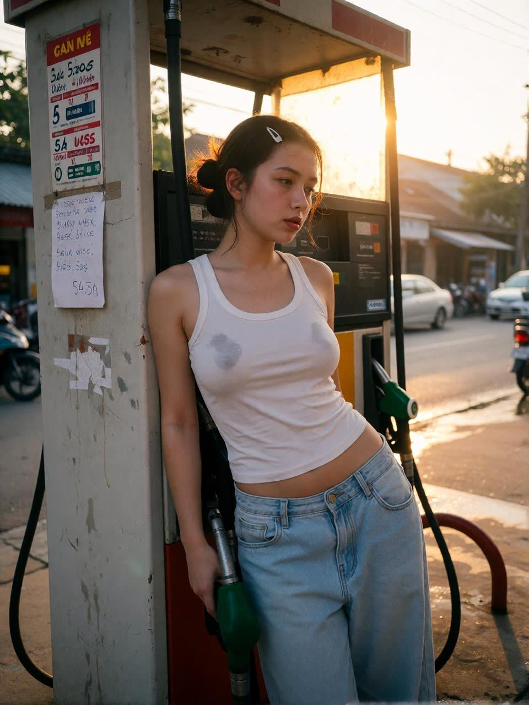

Documentary dawn at a Vietnamese gas station
REA-011RealismKrea 2by Senge (@senge0301)2026-09-27

Documentary lifestyle photo at 5:50am — a woman leaning on a scooter at a street gas station, ambient dawn light.
Prompt
Documentary lifestyle photo, dawn at a Vietnamese street gas station around 5:50am. A 24-year-old Vietnamese woman leans against the fuel pump column, one hand holding the fuel nozzle. She wears a plain white cotton tank top, slightly damp with sweat in the morning heat, the thick fabric fully opaque with only a faint hint of contour, and loose wide-leg light-blue jeans with the waistband slipped down on one hip. Messy low off-center hair bun with a broken hair clip. Oval face with slightly square jaw, fair rosy skin glowing in strong golden backlight, monolid eyes squinting against the sun, straight nose, full lips with faded lipstick; she glances sideways toward the camera, then toward the fuel price board. Background: fuel pump column, tin canopy glowing with warm sunrise backlight, hand-written paper note taped to the pump, wet concrete floor reflecting golden light, cars and motorbikes blurred in the distance. Shot on iPhone, HDR, realistic skin texture, natural grain, ultra photorealistic, candid everyday slice of life, not anime, not 3D, full body vertical composition. Krea2 · 1050×1400 · 10 steps · cfg 1.0 · seed 424242 / 90210 / 777001 / 606060
Tags: documentary, available light, street